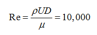
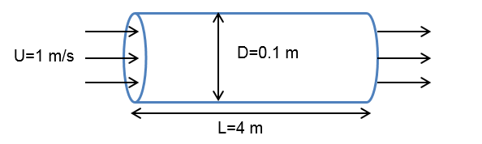
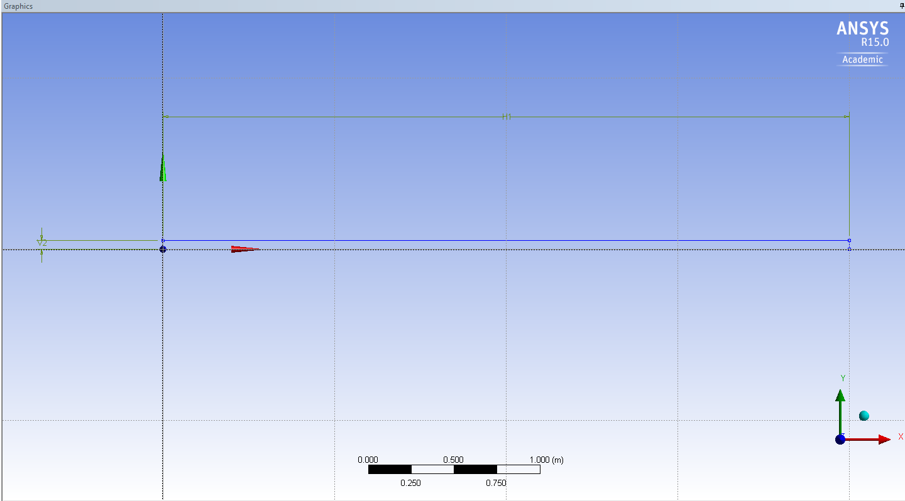
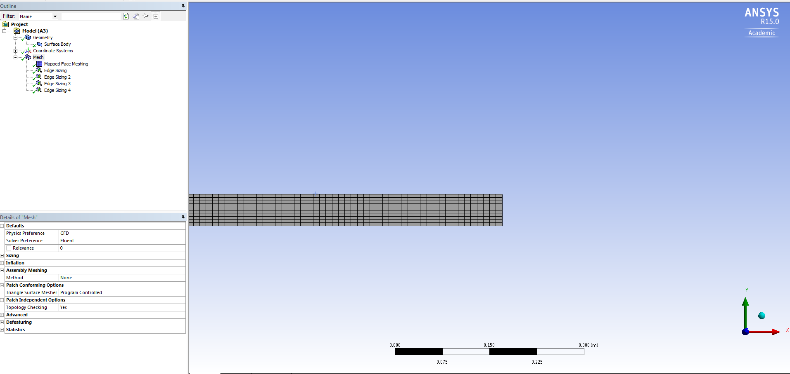
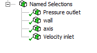
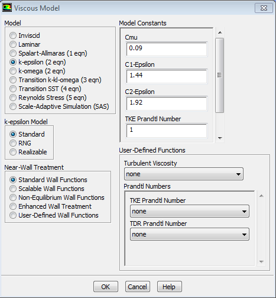
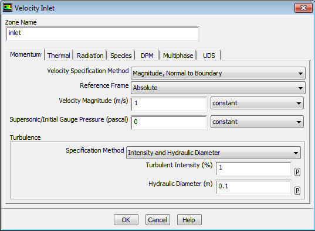
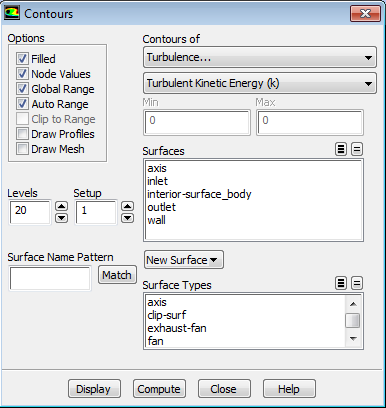
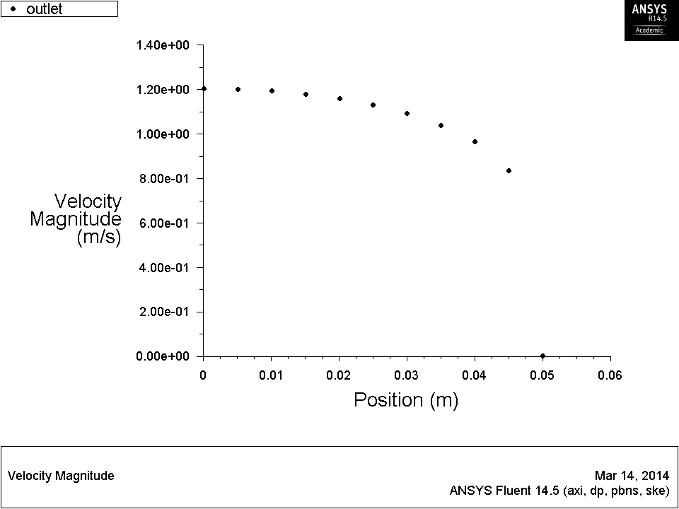

Exercise: Turbulent Flow in a Circular Pipe¶
Introduction¶In this lab, we will revisit the pipe flow example considered in before. As before, the inlet velocity is $1\,\text{m/s}$, the fluid exhausts into the atmosphere and density is $1\,\text{kg/m^3}$. However, we will change the viscosity μ $=$ $1$ × $10^{-5}\,\text{kg/ms}$. The Reynolds number is now

At this Reynolds number, the flow is fully turbulent. As turbulent flows tend to take longer distance to develop, we also need to extend the pipe length accordingly.

Geometry¶
- Make a $4\,\text{m}$ by $0.05\,\text{m}$ rectangle sketch and generate a surface sketch. Make sure the bottom edge lies on the $X$-axis.

Mesh¶
- Apply a mapped face meshing to the surface body.
- Use edge sizing tools to insert $400$ elements along the length, and $10$ elements along the width.


Setup¶
- Launch FLUENT with double precision.
- In the
General task page, choose Axisymmetric under $2D$ Space.
- In the
Models task page, open Viscous Model and choose k-epsilon (2 eqn).
- Examine other available models, but accept the default settings.

- In the
Materials task page, change the properties of air as stated in the Introduction.
- In the
Boundary Conditions task page, set the left boundary to velocity-inlet. Enter $1\,\text{m/s}$ for Velocity Magnitude.
In the Turbulence box, select Intensity and Hydraulic Diameter as the Specification Method. Then enter $1%$ for Turbulence Intensity and $0.1\,\text{m}$ for Hydraulic Diameter.
Turbulence intensity is the ratio of the root-mean-square of the velocity fluctuations,ú $_r$$_m$$_s$, to the mean flow velocity,ü. Although the fluctuations are of high frequency, their magnitudes are small compared to the mean flow. So turbulence intensity is usually no more than a few percent. For an under-developed, undisturbed upstream, a low turbulence intensity as $1%$ is appropriate.
Set the right boundary to pressure-outlet, and apply the same turbulence specification to it.
- Set the bottom boundary to
axis, and the top boundary to wall.

- In the
Reference Values section, select Compute from Velocity Inlet.
- In the
Solution Methods task page, change the Spatial Discretization for Turbulent Kinetic Energy and Turbulent Dissipation Rate to Second Order Upwind.
- In the
Monitors task page, set the convergence criteria for all terms to $1$ × $10^{-6}$.
Initialize the solution from the inlet, and request $500$ iterations.
Post-processing¶
- After the solution converges, go to
Graphics and Animations.
- Open the
Contours window, and notice that a new category – Turbulence – becomes available under Contours of.
- Plot some key flow variables and examine the solution.

- Next, go to
Plots and open XY Plot.
- First, plot the
Velocity Magnitude along the axis.
It takes significantly longer for a turbulent flow to become fully developed.
Then, plot the y+ along the wall. Examine the value.
Is it in the valid range?
Plot the Velocity Magnitude along the outlet.
Note the gap between the first elements. Apparently, the near wall mesh was too coarse to capture the boundary layer. Nonetheless, the solution in the core region looks fine. We will inspect its accuracy later. Export the velocity profile on the outlet for further analysis.

|

 This content is available under a Creative Commons Attribution-NonCommercial 4.0 Unported License.
This content is available under a Creative Commons Attribution-NonCommercial 4.0 Unported License.